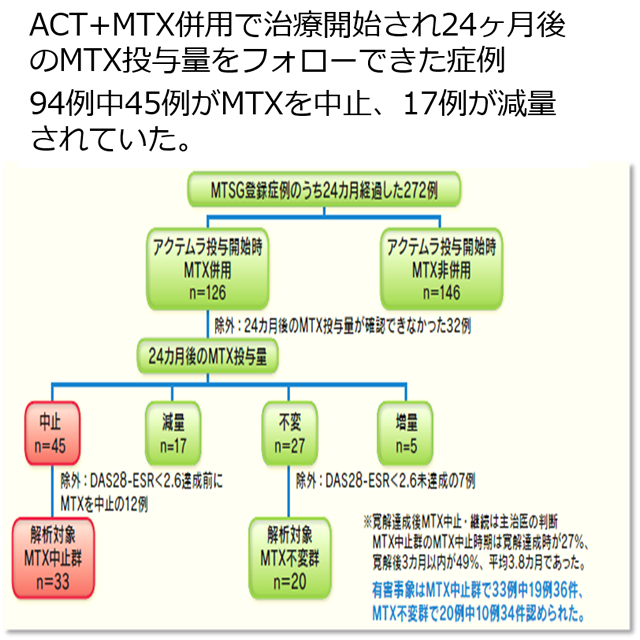
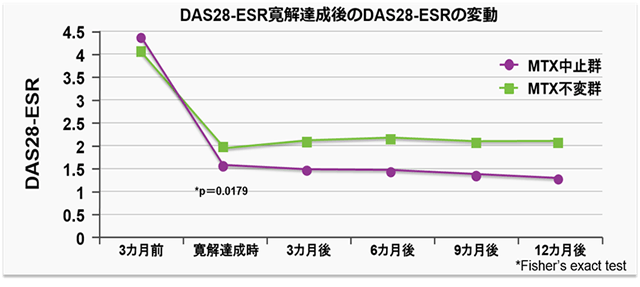

アクテムラ+MTX併用で深い寛解に至った症例は、MTX中止後も寛解が維持された（MICHINOKU Study)

MICHINOKU Tocilizumab Study Group(MTSG)
Tczで寛解達成後にMIXを中止した群と同量のMIXを継続した群で疾患活動性を比較した。
TCZ+ MTX併用で深い寛解に至った症例においては、MTX中止後も寛解が維持された。

MIX中止群では寛解達成時には27%、寛解達成3カ月には49％の患者でMIXが中止され、寛解後 MIX中止までの期間は平均3.8カ月であった。
→MTXを途中で中止してもACT単剤で寛解を維持できる